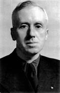
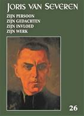
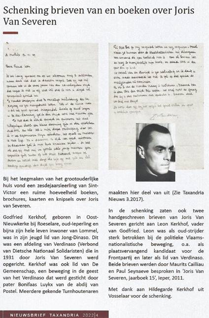
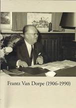
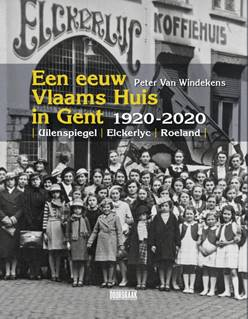
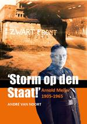
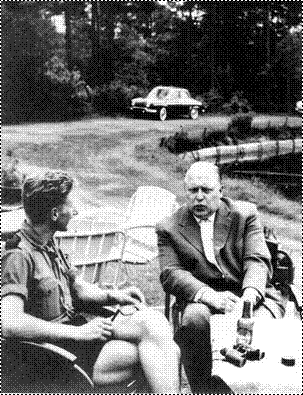
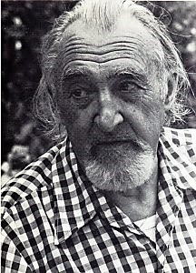

Kaftillustratie:
tekening
Joris
van Severen door Cecile de Langhe
Kaftillustratie:
tekening
Joris
van Severen door Cecile de Langhe
> nieuwsbrief Joris van Severen, 2023 - nr 1
Inhoud
Kaftillustratie:
tekening
Joris
van Severen door Cecile de Langhe
We wensen onze lezers
een voorspoedig en gelukkig 2023. De jaarwisseling heeft zich
inmiddels voltrokken – en meteen is ook het tijdstip
aangebroken voor het hernieuwen van de bijdragen voor 2023.
Dankzij een zuinig beheer blijft het ons mogelijk om,
niettegenstaande alweer gestegen druk- en portkosten, de
minimumbijdrage te behouden op 29 €. In ruil daarvoor
verzekeren we u de stipte toezending van het nieuwe Jaarboek Joris van
Severen – het 27e al – in de
meimaand en van de vier nummers van ons kwartaalblad Nieuwsbrief Joris van
Severen. Vanaf het bedrag van 35 €
boeken we u met dank als steunend lid. Vereffening graag via
onze rekening BE29 4650 2267 2164 op naam van het Joris
van Severen Instituut, Izegem.
Nieuwe biografie
Joris van Severen
We vroegen de auteur Dieter Vandenbroucke recent naar
de stand van zaken met betrekking tot de Joris van
Severen-biografie waaraan hij werkt – en delen u graag z’n
antwoord mee:
Het is
herfst maar veel nieuws valt er niet te rapen. Ik werk gestaag
verder en stuur om de zoveel maanden een hoofdstuk door naar
mijn uitgever. Maar ik tracht veel te polijsten en het verhaal
bondig te houden. En dat vraagt tijd... Wel verschijnt in het
volgende nummer van Wt mijn Van Dorpe-onderzoekje.
Lichtjes herwerkt en aangevuld met de gang van zaken nadien,
meer bepaald de zaak rond het niet-opnemen (of zelfs maar
vermelden) in de acta van het colloquium.
Wetenschappelijke tijdingen
In de rubriek Forum van het
nummer 4/2022 plaatste dezelfde Dieter Vandenbroucke enkele
kanttekeningen bij het onderbelicht blijven van Frantz Van
Dorpe’s antisemitisme in recent verschenen publicaties.
Herdenking Louis Gueuning te Mainvault op 12
november 2022
Na de bloemenhulde – welke lange
traditie is dit reeds! – begon ook dit jaar de stille herdenking
van Louis Gueuning (1971-2022) aan zijn graftombe met de tekst
die destijds nog door Gustave Calbrecht opgesteld is geweest.
Een der getrouwsten onder de getrouwen, Jean-Pierre Destrebecq,
reciteerde de tekst. Deze tekst werd door de aanwezigen – “le
dernier carré”, letterlijk in stille eerbied beluisterd, gevolgd
door Het gebed Sancte Michael Archangele defende nos..., Het Tu
autem in nobis es, Domine…, Het Gebed voor de tijden van gevaar,
En zoals altijd besloten met de zesde strofe van ons Wilhelmus.
Herdenking Joris van Severen 1993
De
Brugse Joris van Severen-herdenking, ingericht door de Stichting
Joris van Severen – thans het Joris van Severen Instituut,
kennen reeds een lange traditie. Recent dook een video-opname op
van de herdenking van 1993 in de abdijkerk van Steenbrugge.
Naast beelden van de herdenkingsmis werd ook gefilmd in het
nabijgelegen Ontmoetingscentrum, waar Paul Meeus een beklijvende
herdenkingsrede hield. Via onderstaande ‘link’ kan kennis
genomen worden van deze reportage:
Recensie Jaarboek Joris van Severen 26 (2022) in ‘Wt’

Studiecentrum
Joris van Severen,
2022,
208 pp., ISBN 9789076057262
____________.
Hier
verschijnt, als vervolg op Jaarboek 25, het tweede deel van Romain
Vanlandschoots artikel Joris van Severen 8 mei 1927-26 mei
1929. Het gaat over de intense onderhandelingen tussen de
regionale Vlaams-nationalistische groeperingen om tot één
gemeenschappelijke partij te komen. Ze “leverden een keiharde
Van Severen op, die geen duimbreed toegaf en steeds meer
zelfzeker naar zijn eigen 'systeem' toewerkte" namelijk naar een
partij van het fascistische type. Een akkoord zonder Van Severen
was onmogelijk, omdat zijn West-Vlaanderen niet kon gemist
worden. Maar de andere onmisbare was Het Vlaamse Front in
Antwerpen, dat de weg naar het fascisme niet op wou. Dus ging
het verder in het uiteenvallen van de beweging “waarvan Joris
van Severen moedwillig in maart 1923 het afbraakproces was
begonnen".
Ruud
Bruijns belicht
de onopvallende figuur van Gerard van der Horst, die jarenlang
de functie bekleedde van secretaris van het Verdinaso in
Nederland. Niet alleen onder katholieken zoals Van der Horst
werden in Nederland sympathisanten van het Verdinaso gevonden.
Henk
Tijssen
bespreekt De (vijf) Hier Dinaso!-lezers onder hervormde
predikanten in de noordelijke Nederlanden. Die abonnees doken op
in 1934 toen 119 predikanten protesteerden tegen het verbod voor
ambtenaren om lid te zijn van de NSB, de
Nationaal-Socialistische Beweging van Anton Mussert, temeer daar
de socialistische SDAP "buiten schot kon blijven", ja zelfs
"vrijuit ontrolde rode vanen op onze vaderlandse straten" werden
toegelaten.
ln
Over de rol van Jef François in 1940-1941 deelt Maurits
Cailliau een interview mee, dat die commandant van de
Dietse Militie in 1983 gegeven heeft. Belangwekkend zijn de
documenten over het akkoord dat tussen het Verdinaso en het
Nationaal Legioen werd gesloten op 24 juli1940.
De
meest uitvoerige bijdrage in dit Jaarboek is die van Hans
Nelis over Het gedachtegoed van een neo-Dinaso-beweging,
De Dietse Solidaristische Beweging (DSB). Die werd gesticht in
1969 en gaf gedurende tien jaar te- kenen van leven.
Lode
Wils
--------------------------------
Recensie
uit WT Wetenschappelijke tijdingen 2022/3 n.a.v. Jaarboek
Joris van Severen 26 (2022), 208 pp, ill., ISBN
9789076057262, ledenprijs 29 €, boekhandelsprijs 35 €
Uit de Nieuwsbrief
2022/4 van de heemkundige kring Taxandria stamt de
navolgende pagina, waarin o.m. verwezen wordt naar het Jaarboek
Joris van Severen 15 (2011), i.c. de bijdrage waarin
Godfried Kerkhofs Jong-Dinaso-tijd te Ieper en zijn latere
betrokkenheid bij De Gemeenschap van Bonifaas Luyks te
Lommel en het Turnhoutse uitgebreid ter sprake kwamen.
Van de brieven van Joris
van Severen aan de vader van Godfried Kerkhof, waarvan sprake,
bezorgde Godfried ons destijds een kopie; die geïntegreerd werd
in ons schaduwarchief Joris van Severen. Dat ook de originelen
thans in goede handen zijn is een goede zaak.

Maurits Cailliau
Ondertussen verschenen de Acta van het
colloquium dat in 2021 in Sint-Niklaas gehouden werd rond de
persoonlijkheid van Frantz van Dorpe. Deze werden op 4 juni 2022
voorgesteld in de Stedelijke Bibliotheek aldaar, waarbij
historicus Emmanuel Gerard wees op het belang van de verzamelde
bijdragen en meteen ook kanttekeningen plaatste bij enkele
aspecten ervan. De betreffende lezing van E. Gerard werd, onder
de titel Frantz van Dorpe en zijn tijd integraal
gepubliceerd in Wetenschappelijke tijdingen, 2022/3, pp.
252-265.
De acta-bundel wordt
ingeleid door Frank Judo die de bijdragen van de overige auteurs
als volgt voorstelt:
Jan Creve onderzoekt Van
Dorpes belangrijke positie in het Verdinaso, voor en tijdens de
oorlogsjaren, waarbij ook aandacht besteed wordt aan zijn
conflicten met Joris van Severen. Piet van Bouchaute gaat verder
op dit elan door de brug te slaan tussen Van Dorpes vooroorlogs
diepgaand engagement in de Vereniging België-Nederland-Luxemburg
en de naoorlogse film Het banket van de smokkelaars, die
blijk gaf van zijn Europese visie.
Het ondernemerschap van
Van Dorpe komt aan bod in twee bijdragen. Dirk Luyten neemt Het
macroperspectief voor zijn rekening en bespreekt Van Dorpe als
exponent van een Vlaamse elite van bedrijfsleiders in de
naoorlogse periode. Arnold van Dorpe bekijkt de zaken dan weer
meer bedrijfsmatig en beschrijft de concrete activiteiten van
zijn vader als het hoofd van verschillende bedrijven.
Het burgemeesterschap
van Van Dorpe is het onderwerp van de bijdrage van Patty de
Meester. Frank Judo vertelt het verhaal van de vriendschap
tussen Van Dorpe en zijn Gorinchemse ambtsgenoot ridder van
Rappard. Waarna Christaan Desmet en Nico van Campenhout een
inkijk bieden in de bibliotheek van Frantz van Dorpe, waarna
Vincent Stuer enige afsluitende bedenkingen ter overweging
geeft.
Is Frantz van Dorpe –
met al deze toelichtingen - nu minder een raadsel dan voorheen?
Het beeld dat rest blijft vol contrasten, meent Frank Judo.
Vragen blijven er genoeg over: over zijn ideologische evolutie,
over de bredere context van het koningsgezinde verzet, over zijn
verhouding tot het antisemitisme. En ook over zijn relaties in
Nederland en over zoiets als een netwerk van oud-Dinaso’s binnen
de CVP van destijds.
________________
De Acta tellen
138 pagina’s en zijn een uitgave van Koninklijke Oudheidkundige
Kring van het Land van Waas i.s.m. het ADVN. De uitgave draagt
geen ISBN; binnen de uitgaven van de KOKW draagt ze het
publicatienummer D/2022/0444/1.
Het verhaal van de Gentse ‘Roeland’
Dat
verhaal, dat aanving in 1920, is ondertussen meer dan een eeuw
oud. Het werd vakkundig nageplozen door Peter van Windekens –
ons wel bekend – en onder vorm van een kloeke band
gepubliceerd door de uitgeverij Doorbraak.
Al voor de Eerste Wereldoorlog hadden Vlaamsgezinden
in Gent nood aan een gemeenschappelijk huis. Een gebouw in de
Korte Kruisstraat, voordien hotel en bank, kreeg een nieuwe
bestemming. Sympathisanten uit het Activisme en de Frontbeweging
richtten hiervoor de samenwerkende vennootschap ‘Elckerlyc’ op.
De Uilenspiegel was opnieuw vooral een horecazaak. In de jaren
1920 vond het bekende Vlaams Volkstoneel er onderdak. En later
was het Verdinaso van Joris van Severen er gedurende korte tijd
‘kind aan huis’. Het geweld van de tegenmanifestanten maakte de
beweging ten slotte ongewenst.
De grootste bloei kende
het Gentse Vlaams Huis na de Tweede Wereldoorlog. De
‘Uilenspiegel’ werd toen omgedoopt tot ‘Roeland’ en de zaak
begon langzaam maar zeker ook financieel te floreren.
En net zoals het Verdinaso er in de vroege jaren dertig de
dienst uitmaakte was dit rond de jaren vijftig het geval voor de
leden van het Algemeen Diets Jeugdverbond van Staf Vermeire, die
er hun vertrouwde thuishaven hadden.
Maar
dit werd de ‘Roeland’ ook voor tal van anderen. Parlementsleden
van de Volksunie hielden er hun zitdagen. Studentenverenigingen,
jeugdorganisaties een drukkingsgroepen organiseerden er tal van
activiteiten, e.d.m.
Vermits
het gebouw na verloop van tijd bouwkundig in slechte staat
verkeerde, werd besloten over te gaan tot afbraak en herbouw,
waarbij de naam ‘Roeland’ weer vervangen werd door het
‘Uilenspiegel’ van voorheen.
Inzonderheid voor de slinkende schare van
voormalige Dinaso’s, maar evenzeer voor wie in de naoorlogse
jaren ooit het groene adjv-uniformhemd
droeg, herinnert de verslaggeving van Peter van Windekens aan
evenzovele memorabele gebeurtenissen van jaren terug die hun
jeugdjaren elan en strijdbaarheid gaven. Een heuse bomaanslag
die de gelagzaal van de Roeland vernielde, incluis.
Zo
refereert de auteur naar de penibele situatie in de vroege jaren
dertig, toen Jef François met de revolver in de hand de inval
van een linkse meute wist te voorkomen – in afwachting dat de
Rijkswacht opdaagde teneinde de belegering ongedaan te maken.
Maar
ook aan de talrijke naoorlogse Dietse Jeugdfeesten van het adjv - inclusief de
traditie van de Rodenbach-male’s – waarvan de eerste in de
Roeland doorgang vond.
Maurits Cailliau
_________________
N.a.v. Peter van Windekens, Een
eeuw Vlaams Huis in Gent 1920-2020. Uilenspiegel –
Elckerlyc- Roeland. Uitg. Doorbraak, 2022. Gen – ill –
290 p – 29,95 € - ISBN 9 789492 639424
Dank zij André van Noort kreeg nu ook Arnold Meijer
zijn biografie. In afwachting van een meer grondige bespreking
hieronder alvast enige verwijzingen naar Meijers aandacht en
belangstelling voor Joris van Severen en het Verdinaso:
“Een
andere Vlaamse leider was Joris van Severen, oprichter en leider
van het verbond van Dietsche Nationaal Solidaristen (Verdinaso
of Dinaso). Deze fascistisch georiënteerde beweging had vanaf
1934 als de doelstelling het samengaan van Nederland, geheel
België en Luxemburg (plus koloniën) in een nieuw op te richten
staat: de Dietsche Volksstaat. Dat streven zal Meijer wel
interessant gevonden hebben. Het is de vraag of zij elkaar ooit
ontmoet hebben, omdat Meijer een persoonlijke aversie tegen hem
had. Meijer zag hem als een concurrent omdat hijzelf leider van
Groot-Nederland wilde worden en Van Severen van Dietsland. De
organen van Zwart Front en Verdinaso bekogelden elkaar dan ook
gretig met modder. Hoe dachten de Vlamingen over Meijer? Toen
Meijer in de periode 16 februari-16 mei 1938 in de
strafgevangenis te Breda zat, kreeg hij op 7 april een telegram
met de volgende inhoud: ’V.N.V. universiteit Leuven op haar
Lente-male brengt Dietsche hulde aan den leider van Zwart
Front.’ Dat zal voor Meijer een opkikkertje geweest zijn. Een
ander brief zal voor Meijer ook plezierig zijn geweest. Op 10
november 1938 schreef kameraad J. Perey uit ‘s-Hertogenbosch dat
hij van kameraad Lombaers een brief met de volgende inhoud:
(...)
Tegen
die achtergrond wilde Lutkie de Zwart Front-leider met Joris van
Severen, de leider van het Verdinaso, in verbinding brengen,
maar door Meijers tegenzin kwam hier niets van terecht. Lutkie
maakte zich ernstig zorgen. Hij schreef in zijn brief aan
Cuypers: ’Gij begrijpt wel dat ik onzen goeden Arnold Meijer,
ondanks het zorgenkind dat hij in zoo menig opzicht voor mij al
geweest is, geen kwaad hart kan toedragen. Doch ik heb ernstige
reden mij ongerust te maken zoowel over zijn persoonlijk lot als
over zijn werk.’ Lutkie moest niets hebben Albert Kuyle en Ad.
Sassen, zij waren verkeerde raadslieden.”
“Meijer
was diep gegriefd en weigerde om verdere besprekingen te voeren.
Op 9 november 1940 fuseerde Dinaso-Nederland, na de tragische
dood van Joris van Severen, met de NSB. ‘Een scheutje melk in
een emmer vol inkt’ zei men. Tenslotte voerde Meijer gesprekken
met de Fryske Folkspartij. Tsjalling Terstra schreef op 23
november 1939 namens deze partij aan Arnold Meijer, dat
samenwerking met Zwart Front een goede zaak was. Terpstra wilde
alleen niet dat de Fryske Folkspartij kwam niets terecht. Meijer
wilde wel eenheid en samenwerking, maar alleen onder zijn
leiding en volgens de beginselen van Zwart Front. Die starre
houding stond de oprichting van één nationale beweging in de
weg: de leiders van andere rechts-radicale organisaties lieten
zich niet zomaar opzij zetten.”
“We
hebben gezien dat Meijer in zijn Zwart Front-tijd voor
samenwerking met andere politieke groeperingen te vinden was,
maar die moest dan onder zijn leiding en voorwaarden tot stand
komen. Door die eigengereide opstelling kwam er van enige
bundeling niets terecht. Ook in zijn Nationaal Front-periode
hield Meijer zich met samenwerking bezig met even weinig
resultaat. In juni 1940 werd Meijer door mr. dr. W.M. Westerman
en dr. H.W. van der Vaart Smit opgeroepen tot medewerking aan de
eenheid van de fascistische en nationaalsocialistische groepen
in Nederland. Zij wilden overleg met de leden van Nationaal
Front, maar hij deelde hun doodleuk mede hier niet op in te
gaan. Hij wees op een andere poging om tot een samenspraak te
komen en wilde die actie niet graag doorkruisen. Een maand later
kreeg Meijer een brief van W. v.d. Griendt te Eindhoven die, nu
de stichter en leider van Verdinaso, de Vlaming Joris van
Severen, was omgekomen, hoopte op samenwerking tussen Nationaal
Front en Dinaso Nederland.”
Tot zover, bij wijze van
bloemlezing, deze dwarsdoorsnede uit de biografie die mooi
aansluit op de biografie van Wouter Lutkie die we vorig jaar
mochten verwelkomen. Toevallig draagt de auteur dezelfde
familienaam als Frank van Noort, die al in 1961 met Zwart
Front en Arnold Meijer bij Uitgeverij Oranje/Zulte een
eerste aanzet publiceerde. Frank van Noort was een pseudoniem
van Dick Andrée
Arnold Meijer in
gesprek met Maurits Cailliau, in het bungalowpark ‘de Rosep’
Merkwaardig
toch wel dat de auteur in z’n biografie nergens aandacht
besteedt aan het kenteken dat zowel Zwart- als Nationaal Front
voerden, nl. de Ramshoorn, zijnde een oeroud Nederlands symbool;
we plaatsten het bovenaan deze bijdrage. Zijn betekenis werd
destijds door Meijer als volgt toegelicht: "Ons storminsigne zal
het embleem van de gehele beweging moeten worden: de ramshoorn
en het zwaard. Het moge beduiden dat, nu door de democratisch
tyranieke regering de storm ontbonden moet worden, ieder lid van
mentaliteit stormer moet zijn: actief, strijd bereid. De
ramshoorn teken van verdediging van het vaderland en van
nationale goederen. Het zwaard ten teken, dat we bereid zijn tot
strijd voor welvaart en de onafhankelijkheid van dit land en
bovenal als teken van gerechtigheid.”
Aula UGent, met het Ramshoornsymbool op de
smeedijzeren afsluitingen van de balkons
Dat Ramshoorn-symbool is
in veelvoud terug te vinden in de aula van de Gentse
Universiteit – gesticht door koning Willem I – in de
Volderstraat aldaar, waar het de balkonafsluitingen siert.
Maurits Cailliau
__________________________
N.a.v. André van Noort, Storm op de Staat!
Arnold Meijer 1905-1965. Uitgeverij Verloren, ISBN
9789464550221, 256 p., 25 € +
verzendkosten .
Luc
Pauwels
23 oktober 1983 Overlijden in Bornem (Antwerpen)
van Pol le Roy(78), (° 1 maart 1905), Vlaams
dichter en politicus. In zijn studentenjaren wordt Le Roy
Vlaams-nationalist, onder invloed van het IJzerdrama van de
Vlaamse soldaten, van Cyriel Verschaeve en Wies Moens. Hij werkt
in zijn geboortestreek Klein-Brabant nauw samen met Ward Hermans
en sticht er een afdeling van de Vlaams-Nationale Wacht. Als
Joris van Severen in 1931 het Verbond van Dietse Nationaal Solidaristen (Verdinaso)
opricht,
treedt hij dadelijk toe.
Pol le Roy wordt algemeen
secretaris van het Verbond
van Nationale Arbeiderssyndicaten (NAS). In
augustus 1934 wordt het NAS onder regeringsdruk ontbonden, maar
Le Roy richt dadelijk het Verbond van Dinaso Corporaties (VDC)
op. Vanaf dan zetelt hij in de leiding van het Verdinaso. Later
wordt hij hoofdredacteur van Hier Dinaso!, het weekblad van de
beweging. Hij vervangt Van Severen tijdens diens ziekteperiode
als secretaris-gevolmachtigde van het Verdinaso. Le Roy
publiceert eind jaren 1930 verscheidene brochures over het
solidarisme en de corporatieve orde.
Le Roy is in Brugge bij Joris van
Severen thuis als deze op 10 mei 1940 wordt aangehouden en
wederrechtelijk gedeporteerd. Zelf wordt hij op 13 mei 1940
gearresteerd en onwettig met de ‘Spooktreinen’ naar Frankrijk
gevoerd, waar hij in een gevangenenkamp terechtkomt. Hij komt in
de zomer van 1940 getraumatiseerd terug en wijdt zich opnieuw
aan de uitgave van Hier
Dinaso! Een belangrijk deel van het Verdinaso,
met daarbij Le Roy, sluit aan bij het Vlaams Nationaal Verbond
(VNV) dat zichzelf tot ‘Eenheidsbeweging’ had uitgeroepen. Le
Roy komt in de Raad van Leiding en wordt hoofdredacteur van het
VNV-blad De
Nationaal-Socialist. Al vlug krijgt hij genoeg
van de onduidelijke koers van het VNV en einde september 1941
neemt hij alweer ontslag uit het VNV.
Hij treedt toe tot de Duits-Vlaamse Arbeidsgemeenschap
(DeVlag), wordt er in januari 1942 de
propagandaleider van en even later ook leider van het hoofdambt
‘Scholing’. In september 1944 wijkt Le Roy uit naar Duitsland.
Hij zetelt er in de Vlaamse Landsleiding, weer als
verantwoordelijke voor propaganda. In mei 1945 wordt hij in
Lüneburg (Nedersaksen) gearresteerd. Op 16 oktober 1947 wordt
hij ter dood veroordeeld. Hij verblijft gedurende lange maanden
in de dodencel, maar wordt in juli 1948 begenadigd. Op 15
september 1951 komt hij voorwaardelijk in vrijheid.
Naast een zeer goed redenaar
blijkt Le Roy ook een opmerkelijk dichter, sterk beïnvloed door
Wies Moens, en nadien door het surrealisme. Zijn eerste
dichtbundel publiceert hij in 1941. In zijn poëzie beschrijft
hij de opgang van de mens vanuit de materie naar een geestelijke
werkelijkheid en verwijst vaak naar esoterische en mystieke
achtergronden. Hij blijft tot op hoge leeftijd publiceren. Vanaf
1951 werkt hij als vertaler, onder meer voor de CVP en voor de
Koninklijke Automobilistenbond, en van 1958 tot 1970 was hij
bovendien poëzierecensent van het maandblad De Periscoop. Hij
werd niet meer politiek actief.
____________
Bron: Doorbraak, 23 oktober 2022.
PS: op de website van de heemkring
Een hart voor Wingene verscheen van de hand van Bjorn
van Eetvelt een uitgebreide levensschets van Pol le Roy. We
kregen toestemming deze belangrijke studie te publiceren in
het Jaarboek Joris van Severen 2024.
Aleidis
Verbruggen (Antwerpen 27 juli 1932 – Mere
17 oktober 2022) was een dochter uit het Dinaso-gezin Renaat
Verbruggen - Isa de
Bois en de echtgenote van Ray Dierick. Alsdusdanig was ze lid
geweest van het Jong-Dinaso. Als dichteres publiceerde ze
talloze dichtbundels onder de naam Aleidis Dierick, waaronder
ook verzen gewijd aan Joris van Severen (zie de Jaarboeken Joris
van Severen 20 en 22). Ze was sinds jaar en dag lid van het
Studiecentrum Joris van Severen.
Walter Cleppe (5 november 1930 – 2 juni
2021), was allicht Jong-Dinaso geweest. Na WO.II was hij lid van
het Algemeen Diets Jeugdverbond (ADJV). Vanaf de aanvang was hij
een milde sponsor van het Studiecentrum Joris van Severen.
De E.H. Gijs
van Ryckeghem (Geluwe 21 februari 1931 – Waregem
21 november 2022) was, naast zijn betrokkenheid tot alles wat
Frans-Vlaanderen betrof, evenzeer geboeid door de figuur en de
beweging van Joris van Severen en vanuit die belangstelling van
meet af aan lid van ons Studiecentrum.
Bij wijze
van documentatie: uit het Bulletin Périodique de la Presse
Belge N° 113
d) Les partis politiques.
1. Les
fascistes flamands «Dinasos».
Un nouveau parti
politique flamand, le «Verbond van Dietsch Nationale
Solidaristen», «Verdinaso» ou plus brièvement encore, le
«Dinaso» s'est imposé violemment à l'attention de l'opinion
publique belge. Son fondateur et chef est M. Van Severen ancien
député frontiste de Thielt. ‘Assez intelligent’, dit la Nation Belge (5-9),
‘pour reconnaître que le frontisme en soi est une chose creuse
et purement négative, il a fait un parti hitlérien qui s'appelle
solidariste. Il se propose d'édifier un Etat corporatif,
éntièrement établi sur des organisations de métiers, classées
elles-mêmes suivant les différentes catégories de la production.
Cet Etat ou «Impérium» s'appuierait sur des milices. Les
Verdinasos ou Knapenvendels formeraient le faisceau des jeunes.
La Dinaso-militie serait la milice ou «nouvelle aristocratie».
Enfin les «Staatsbouwende leden» ou membres bâtisseurs de l'Etat
seraient les intellectuels.»
Ce parti semble,
si l'on en croit les fondateurs, s'être développé en Flandre
avec une grande rapidité. En octobre 1932, il y avait 5.000
miliciens, 2.500 Verdinasos et un millier environ de bâtisseurs
ou constructeurs. Il est violemment antisémite. M. Van Severen
explique que ce n'est pas tellement par «racisme» que par haine
du grand capitalisme banquier, presque toujours influencé par
les Juifs et qui est aux antipodes du mouvement corporatif des
solidaristes.
«Voilà une dizaine
de milliers d'individus résolus (on peut sans risque aucun citer
ce chiffre-là). Ils portent la chemise bleue, la culotte grise
et marchent en rangs derrière un drapeau orange orné en son
milieu d'une boule blanche. Dans celle-ci on voit un insigne
composé d'une charrue, d'une roue dentée et d'un glaive.» Les
Dinasos espèrent que le coup de force qui leur donnera le
pouvoir viendra à la faveur d'une grande agitation en pays
wallon, quand la gendarmerie et la troupe, mobilisées sur
Charleroi, auront dégarni la Flandre qui se lèvera comme un seul
homme. Alors sera constitué le puissant Etat qui comprendra la
Hollande, la Flandre belge et la Flandre française avec
l'Afrique du Sud comme Dominion. On partagera le Congo avec les
Wallons.»
Ce programme est
généralement jugé ridicule. Le Peuple qui consacre à l'organisation et à
l'activité du parti, plusieurs articles (17, 18, 19, 20, 21-9)
estime cependant qu'il ne faut pas le négliger et qu'il importe
même d'entraver au plus tôt son développement.):' «Car, dit-il
(23-9),si les Dinasos n'ont pas de nombreux partisans, ils
semblent avoir beaucoup d'argent. Ils disposent déjà dans le
pays d'une douzaine de maisons flamandes. Ils viennent d'acheter
à Gand un immeuble de 300.000 francs et vont s'efforcer de
développer leur propagande parmi les étudiants gantois. Les
autorités ont pour devoir d'interdire une organisation qui vise
à la destruction de l'Etat et des institutions démocratiques.»
Le même journal
(4-10) annonce que les dinasos, étendant leur influence à
Bruxelles vont y ouvrir une maison, qu'ils ont déjà organisé des
groupes dans les faubourgs II donne en même temps le nouveau
programme du nationalisme flamand, élaboré et publié dans les
journaux de la Centrale de propagande d'Alost, par Staf
Declercq, ancien député frontiste. L'organe des dinasos Hier Dinaso! le
qualifie d' «Ersatz-Dinaso» et Van Severen dit avoir la
certitude que son parti absorbera ou assimilera tous les autres
groupements nationalistes flamands.
Le Vooruit (7-10) publie
la reproduction photographique d'un document, dont il donne la
traduction suivante:
PARTI OUVRIER
NATIONAL-SOCIALISTE ALLEMAND
Direction
centrale. Division: Ostland V. Tr. IN. 1921
Munich, le 29
décembre 1931.
Très estimé,
Monsieur Van Severen,
Par
l'intermédiaire de notre camarade, le docteur Fleischmann-Koln,
nous avons reçu une description du mouvement
national-solidariste, ainsi que votre adresse. La division
Ostland qui étudie attentivement tous les problèmes
pangermanistes a naturellement le plus grand intérêt à se tenir
dans le contact le plus étroit possible avec tous les mouvements
analogues dans les pays germaniques.
Nous vous serions
très reconnaissants de nous envoyer une description
circonstanciée de la situation en Belgique et en Flandre et nous
sommes volontiers disposés à un échange de matériel de
propagande et de journaux. Nous ignorons votre point de vue au
sujet du problème de la race, en tout état de cause nous
joignons à cette lettre un exposé qui éclaire la politique
raciale du parti nazi et nous vous demandons de le publier dans
un de vos journaux. Ce nous serait une très grande joie
d'arriver à un accord fraternel avec le peuple frère des
Flandres et nous rencontrons très cordialement vos vœux de
collaboration. Pour votre édification, nous ajoutons que, comme
direction centrale, nous sommes, cela va sans dire, en liaison
directe avec M. Rosenberg et avec le Führer lui-même. Avec notre
salut national-socialiste!
(S.) Karl METZ.
L'organe
socialiste gantois ajoute: «L'opinion publique a le droit de
savoir qui paie les amis d'Hitler.» - Sans nier le prompt
développement du Dinaso, la
Libre Belgique (7-10) estime qu'il ne faut pas exagérer.
«N'oublions pas,
dit-elle, que ce développement se fait aux dépens des autres
groupes séparatistes.»
2. Désagrégation du parti des nationalistes
flamands.
La Libre Belgique (13-10) estime que
le parti nationaliste flamand est menacé d'une prompte
dislocation. Les élections de 1929 et de 1932, en écartant du
Parlement MM. Van Severen, Ward Hermans et Staf Declercq,
avaient considérablement réduit l'influence des frontistes. Or,
la plus grande .partie des organisations du nationalisme flamand
viennent d'être dissoutes. Un nouveau parti serait prochainement
constitué par M. Staf Declercq, sous l'appellation de «Vlaamsch
National Verbond». Il viserait la création d'un «Etat d'Orange».
La forme d'organisation, la méthode et le programme
économico-social du «Dinaso» seraient repris dans leurs grandes
lignes. On combattrait l'internationalisme, le marxisme et le
parlementarisme actuel. Certains organes frontistes ont admis la
nouvelle organisation. Le journal d'envers. Ons Vaderland, n'a pas
encore adhéré au nouveau mouvement. Le Schelde déclare qu'il
fera connaître son avis lorsque les négociations en cours auront
pris fin. A Gand, les groupements extrémistes se refusent
catégoriquement à souscrire au projet de M. Staf Declercq.
«En tout cas,
conclut la Libre Belgique,
un fait est certain : le parti frontiste loin de conquérir le
peuple flamand, se désagrège de plus en plus. Et ce n'est pas,
pensons-nous, les projets de l'ex-député Declercq ni l'agitation
créée par les «chemises vertes» du «Führer» Van Severen qui
remettront de l'ordre dans ses rangs.»
___________
Bron: Bulletin de la
presse belge de 17 mai au 31 octobre 1933; n°. 113, pp. 14 en
15. Dit ‘bulletin’ was een uitgave van het Franse
Ministerie van Buitenlandse Zaken – die blijkbaar de toestand
in België op de voet volgde! Thans terug te vinden op het
internet.
In deze rubriek verwijzen we zonder veel commentaar
naar recente publicaties waarin Joris van Severen en/of het
Verdinaso vermeld worden. We citeren de meest treffende
passussen woordelijk zonder daarin volledigheid na te streven.
We verzoeken onze lezers, met ons, uit te zien naar
publicaties die voor deze rubriek 'stof' kunnen leveren en ons
kopie van de betreffende passages toe te sturen.
IJzertoren
“Een stoet die ik me zeer goed herinner, was deze van
het Verdinaso in 1939. Er werd een grote verlichte IJzertoren
meegedragen, die nabij de Heulebrug in brand schoot.(…)”
________________
Johan Ballegeer in Lissewege en Ter Doest.
Geschiedenis van het witte dorp en zijn abdij,
Lannoo/Tielt, 2003. Mocht deze anekdote op waarheid berusten,
dan stelt zich wellicht de vraag of die pseudo-IJzertoren zomaar
“in brand schoot” dan wel aangestoken werd. Het Verdinaso was
immers een tegenstander geworden van de IJzerbedevaart: denk aan
C. Verschaeve’s spreekkoor Laat ze niet rotten, o
Vlaanderland…